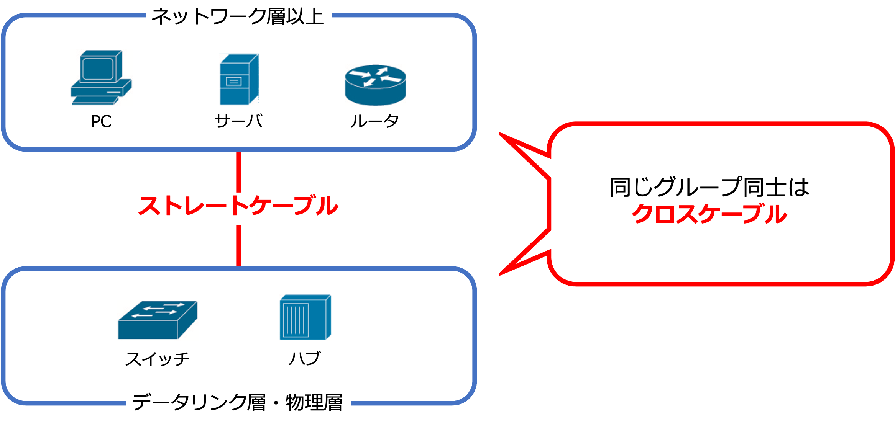

ケーブル
◆ケーブル
さて、ここからはOSI参照モデルの層に沿って学習を進めていきます。
ただ、第1層目である物理層の役割を学習する前に、まずはケーブルについて理解を深めていきましょう。
ケーブルの学習を行うことで、これから登場する物理層で使用する機器について、より深く理解できるようになります。
◆ツイストペアケーブル
ツイストペアケーブルの定義を簡単に説明すると、以下になります。
■ツイストペアケーブル
2本の電線をより合わせたケーブルのこと
別名、「より対線（よりついせん）」と呼ばれる
ツイストペアケーブルは、銅線を用いたケーブルの大元のような立ち位置になります。
これから説明する、UTP・STPやストレートケーブル・クロスケーブルはツイストペアケーブルをより細かく分類したものになります。
広く定義されているケーブルなんだな、と覚えておきましょう。
◆UTPとSTP
先ほど説明した通り、UTPとSTPはツイストペアケーブルに該当します。
この2つは「電線自体の保護性」を基準に分類されています。
1つずつ詳しく見ていきましょう。
①UTP
UTPは「Unshielded Twisted Pair」の略です。
英語からなんとなく察せる通り、こちらは電線の保護が薄い方になります。
UTPの定義を簡単に説明すると、以下になります。
■UTP
8本の銅線を2本ずつより合わせた4対の線をさらにより、外側をビニール皮膜で覆ったケーブル
・メリット
安価で扱いやすい
・デメリット
外部からの影響を受けやすい
現在のLAN構築のほとんどが、このUTPを使って構築されています。
②STP
STPは「Shielded Twisted Pair」の略です。
シールド保護がされている強い方になります。
STPの定義を簡単に説明すると、以下になります。
■STP
2本ずつより合わせた線をシールドで覆い、その外側をさらに金属箔などでシールド処理をしたケーブル
・メリット
ノイズの影響を受けにくい
・デメリット
コストが高いので、特殊環境以外ではあまり使用されない
◆ストレートケーブルとクロスケーブル
ストレートケーブルとクロスケーブルも説明した通り、ツイストペアケーブルに該当します。
この2つは「銅線の並び方」を基準に分類されています。
1つずつ詳しく見ていきましょう。
①ストレートケーブル
■ストレートケーブル
8本の銅線を全く同じ並びでコネクタに接続しているケーブル

②クロスケーブル
■クロスケーブル
8本の銅線をクロスさせて接続しているケーブル
具体的には、片方のコネクタの1,2番に接続されている銅線を、もう片方のコネクタの3,6番に接続されているケーブルのこと

--ストレートケーブルとクロスケーブルの選び方--
このストレートケーブルとクロスケーブル、繋ぎたいノードによって選び方が変わってきます。
選び方を理解していきましょう。
選び方の基準として、まずは
①ネットワーク層以上で動作するノード
②物理層、データリンク層で動作するノード
の2つにグループ分けします。
まだ他の層の学習をしていないので、どのノードがどの層で動作するのか分からないと思いますが、大体、
①：PC、ルータ、サーバ 等
②：ハブ、スイッチ
でグループ分けすることができます。
グループ分けしたのち、以下のようにケーブルを選ぶことができます。
■ルール１
①に属するノードと②に属するノードを接続する際は、ストレートケーブルを使う。
■ルール2
同じグループに属するノード同士を接続する際は、クロスケーブルを使う。
このグループ分けに基づいた考えを覚えておくと、ケーブルを選ぶ際、迷わず選択することができます。

--ケーブルの実情--
さて、ここからはこぼれ話になります。
ここまでストレートケーブルとクロスケーブルの違いや選び方について学んできました。
が、実は実務ベースでストレートケーブルとクロスケーブルを意識する機会はほとんどありません。
というのも、最近はクロスケーブルの役割を併せ持ったストレートケーブルが主流になっているためです。
したがって、Cisco Packet Tracer上では、クロスケーブルを選ぶ場面でストレートケーブルを選択しても問題なく動きます。
それに伴い、このカリキュラム内では見やすさを重視してストレートケーブルのみでネットワーク構築を行っていきます。
ただし、CCNAの試験ではストレートケーブルとクロスケーブルの違いや役割についての問題が出題されます。
そのため、ローカル環境でネットワーク構築を行う際は、ストレートケーブルとクロスケーブルを意識して接続を行うと覚えやすいと思います。
ぜひ意識してネットワーク構築をしてみてください。
◆ケーブルの品質
ツイストペアケーブルの品質について説明します。
ツイストペアケーブルの品質は、「カテゴリー」で表されます。
よく見かける表示として、「Cat5」というように省略されて表記されることが多いです。
基本的には、カテゴリーの後に数字が続き、その数字が大きいほど品質が高く、1秒あたりに送信できるデータの量が多くなります。
が、その代わりに価格は高くなります。
カテゴリの話は、CCNAの試験では必須で出てくるので、資格取得を目指す人は詳しく調べてみてください。
◆光ファイバーケーブル
さて、ここまでツイストペアケーブルの学習を進めてきましたが、ツイストペアケーブルに属さない通信用ケーブルが存在します。
それが、光ファイバーケーブルです。
光ファイバーケーブルの定義を簡単に説明すると、以下になります。
■光ファイバーケーブル
電気信号ではなく、光によって通信するケーブル
中心部のコアとその周りのクラッドをさらに皮膜で覆った構成
・メリット
回線速度が速く、安定している
・デメリット
取扱が難しい
今現在、主要なインターネット回線となっている光回線はこの光ファイバーケーブルを使用しています。
以上が通信に用いる主要なケーブルになります。
ケーブルの特徴や選び方については、CCNAでもよく問われます。
きちんとそれぞれの役割や使い方を理解できるようにしておきましょう。
ケーブルの内容が理解できたところで、いよいよ次の項目では物理層の学習に進みます。